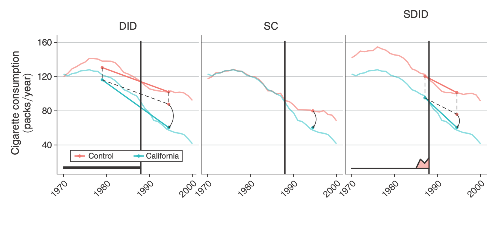

본 포스트는 서울대학교 GSDS Sanghack Lee(이상학) 교수님의 Causal Inference 강의 자료(Synthetic Difference-in-Differences 편, Causality Lab, 2025년 6월 1일)를 바탕으로, 강의를 처음 듣는 독자도 논리적 흐름을 따라갈 수 있도록 재구성한 것입니다. 원본 슬라이드는 Arkhangelsky, Athey, Hirshberg, Imbens & Wager (2021, AER)의 Synthetic Difference-in-Differences와 그 실증 구현을 정리한 Clarke, Pailañir, Athey & Imbens (2023)를 계보로 합니다. 앞선 16강 Differences in Differences와 17강 Synthetic Control Method를 먼저 읽고 오시면, 이 회차가 정확히 어떤 두 갈래를 봉합하려 하는지가 훨씬 선명해집니다.
한 줄 요약 (TL;DR)
“DiD의 고정효과와 SCM의 단위 가중치를 하나의 이중차분 회귀 안에 합치고, 두 방법 모두에 없던 시간 가중치를 새로 얹는다.”
DiD는 평행추세라는 강한 가정 위에서 모든 통제 단위와 모든 시점을 균등하게 씁니다. SCM은 단위 가중치로 사전 추세를 맞춰 그 가정을 덜어 내지만, 단위 고정효과를 포기하는 바람에 합성 통제가 처치 단위와 수준(level)까지 일치해야 한다는 부담을 떠안습니다. 합성 이중차분법(Synthetic Difference-in-Differences, SDiD)은 양쪽을 모두 취합니다. 단위 가중치 \(\hat{\omega}_i\)로 추세만 맞추고(절편 \(\omega_0\)를 허용해 수준 차이는 단위 고정효과 \(\alpha_i\)에게 넘깁니다), 여기에 처치 시점과 닮은 사전 기간에 힘을 실어 주는 시간 가중치 \(\hat{\lambda}_t\)를 새로 도입합니다. 그 결과 이중차분 회귀가 국소적(local)으로 바뀌어 — 닮은 단위와 닮은 시점만 보게 되어 — 강건성과 정밀도를 동시에 얻습니다.
1. DiD vs. SC vs. Synthetic DiD (한 장으로 보는 세 방법)
세 방법의 차이는 수식보다 그림 한 장이 먼저 말해 줍니다. 앞선 두 회차에서 계속 다루었던 California Proposition 99 사례를 세 방법으로 각각 추정한 결과입니다.

이 그림에서 미리 읽어 둘 것은 세 가지입니다.
- DID: 통제집단을 가중하지 않고, 사전 기간도 균등하게 씁니다. 그 대신 수준 차이는 단위 고정효과로 흡수하므로 두 선의 높이가 달라도 문제되지 않습니다. 문제는 기울기가 다를 때입니다.
- SC: 단위 가중치로 통제를 합성해 사전 궤적을 맞춥니다. 그런데 단위 고정효과가 없으므로 수준까지 맞아야 합니다 — 그림에서 두 선이 사전 구간 내내 포개져 있는 이유입니다.
- SDID: 가중치로 기울기를 맞추되, 수준 차이는 고정효과에게 맡깁니다. 게다가 사전 기간 중 어느 시점을 볼지까지 가중치로 고릅니다.
2. 복습: DiD와 SCM (Recap: DiD and SCM)
2.1 두 방법이 각각 무엇을 했는가
- 이중차분법(Difference-in-Differences, DiD)은 처치집단과 통제집단의 시간에 따른 결과 변화량을 비교하여 인과효과를 추정합니다.
- 평행추세 가정(parallel trends assumption): 처치가 없었다면 두 집단이 공통의 추세를 따라갔을 것이다.
- 이 가정 덕분에 집단 간 시간 불변(time-invariant) 수준 차이는 허용됩니다. 두 집단의 출발 높이가 달라도 상관없다는 뜻이며, 이것이 회귀식에서 단위 고정효과 \(\alpha_i\)로 나타납니다.
- 합성통제법(Synthetic Control Method, SCM)은 비교 사례 연구(comparative case study) 설정을 다룹니다.
- 처치 단위가 단 하나만 관측되고, 그와 짝지을 다수의 기부 단위(donor units) 풀이 있을 때,
- 그 후보들의 가중결합으로 처치 단위와 매칭된 합성 통제를 만들어 냅니다.
2.2 닮았지만 결정적으로 다른 두 지점
두 방법은 정신적으로는 유사합니다. 둘 다 패널 데이터(panel data)를 대상으로 하고, 둘 다 “처치가 없었다면의 궤적”을 통제 쪽에서 빌려 옵니다. 그러나 가정과 구현에서 다음 두 가지가 갈립니다.
| 구분 | DiD | SCM |
|---|---|---|
| 단위 가중치 \(\omega_i\) | 없음 (모든 통제 단위 균등) | 있음 — 사전 궤적을 맞추도록 추정 |
| 단위 고정효과 \(\alpha_i\) | 있음 | 없음 |
| 시간 고정효과 \(\beta_t\) | 있음 | 있음 |
| 전체 절편 \(\mu\) | 있음 | 없음 |
원본 슬라이드가 복습 자리에서 굳이 이 대조표를 꺼내는 이유는, SDiD가 이 표의 “있음”들을 전부 모아 놓은 것이기 때문입니다.
- SCM에서 가져오는 것 → 단위 가중치 \(\hat{\omega}_i\)
- DiD에서 가져오는 것 → 단위 고정효과 \(\alpha_i\)와 전체 절편 \(\mu\)
- 어느 쪽에도 없던 것 → 시간 가중치 \(\hat{\lambda}_t\) (SDiD가 새로 도입)
뒤에 나올 §4의 세 수식은 사실상 이 표를 LaTeX으로 옮겨 적은 것에 지나지 않습니다.
3. SDiD (Arkhangelsky et al. (2021))
합성 이중차분법의 성격은 두 문장으로 요약됩니다.
- SCM처럼, SDiD는 통제 단위들을 재가중(reweight)하여 사전 처치 추세를 매칭합니다. → 그 결과 평행추세 가정에 대한 의존을 줄입니다.
- DiD처럼, SDiD는 단위 수준의 가법적 이동(additive unit-level shifts)에 불변(invariant)입니다. → 어떤 단위의 결과 전체에 상수를 더해도 추정치가 변하지 않습니다.
이 두 문장은 각각 SCM과 DiD의 핵심 장점인데, 원래는 함께 갖기 어려운 것이었습니다.
- SCM은 재가중을 하지만 단위 고정효과가 없어 가법적 이동에 불변이 아닙니다. 어떤 기부 단위의 수준이 통째로 어긋나 있으면 그 단위는 사실상 쓸 수 없습니다.
- DiD는 가법적 이동에 불변이지만 재가중을 하지 않아 추세가 어긋나면 그대로 편향이 됩니다.
SDiD는 “수준 맞추기는 고정효과에게, 추세 맞추기는 가중치에게”라고 역할을 나누어 두 성질을 동시에 확보합니다. 이 분업이 이 회차 전체를 관통하는 아이디어입니다.
4. 정식화 (Formulations)
SDiD 추정량은 앞서 구한 가중치들을 이원 고정효과(two-way fixed effects, TWFE) 회귀에 얹어 노출의 평균 인과효과 \(\tau\)를 추정합니다. 세 방법을 같은 형식으로 나란히 적으면 차이가 한눈에 들어옵니다.
\[ \hat{\tau}^{\,\mathrm{DiD}} = \arg\min_{\tau,\alpha,\mu,\beta} \left\{ \sum_{i=1}^{N} \sum_{t=1}^{T} \left( Y_{it} - \mu - \alpha_i - \beta_t - \tau X_{it} \right)^2 \right\} \tag{1} \]
\[ \hat{\tau}^{\,\mathrm{SCM}} = \arg\min_{\tau,\mu,\beta} \left\{ \sum_{i=1}^{N} \sum_{t=1}^{T} \left( Y_{it} - \mu \qquad\;\; - \beta_t - \tau X_{it} \right)^2 \cdot \hat{\omega}_i \right\} \tag{2} \]
\[ \hat{\tau}^{\,\mathrm{SDiD}} = \arg\min_{\tau,\alpha,\mu,\beta} \left\{ \sum_{i=1}^{N} \sum_{t=1}^{T} \left( Y_{it} - \mu - \alpha_i - \beta_t - \tau X_{it} \right)^2 \cdot \hat{\omega}_i \cdot \hat{\lambda}_t \right\} \tag{3} \]
식을 구성하는 기호는 다음과 같습니다.
| 기호 | 의미 | 어느 방법에 있는가 |
|---|---|---|
| \(\mu\) | 전체 절편(overall intercept) | DiD, SDiD |
| \(\alpha_i\) | 단위 고정효과 — 단위별 시간 불변 수준 차이 | DiD, SDiD |
| \(\beta_t\) | 시간 고정효과 — 모든 단위에 공통인 시기 충격 | DiD, SCM, SDiD |
| \(\tau\) | 추정 대상: 노출의 평균 인과효과 | 모두 |
| \(X_{it}\) | 이진 처치 지시자 | 모두 |
| \(\hat{\omega}_i\) | 단위 가중치 — 사전 추세를 맞추도록 추정 | SCM, SDiD |
| \(\hat{\lambda}_t\) | 시간 가중치 — 사전 기간을 사후 기간과 맞추도록 추정 | SDiD만 |
원본 슬라이드는 이 세 식에 색으로 주석을 달아 두 갈래의 계보를 표시합니다.
- 가법적 단위 수준 이동(additive unit-level shifts) → 식 (1)과 (3)에 있는 \(\alpha_i\). DiD로부터 물려받은 것입니다. 식 (2)에서 이 자리가 비어 있다는 점(수식에서 공백으로 표시된 부분)이 SCM의 특징입니다.
- 사전 처치 추세 매칭(matches pre-treatment trends) → \(\hat{\omega}_i\)와 \(\hat{\lambda}_t\). SCM으로부터 물려받은 것과 SDiD가 새로 더한 것입니다.
4.1 왜 이 회귀가 “이중차분”인가 — 단계별로 풀어 보기
식 (1)이 우리가 아는 2×2 이중차분과 같은 것임을 확인해 두면, 식 (3)이 무엇을 바꾼 것인지가 훨씬 분명해집니다. 원본은 결과만 제시하므로 여기서는 가정 → 정의 → 중간 단계 → 최종식 순으로 풀어 보겠습니다.
1단계 (설정). 단위가 처치군/통제군 두 덩어리로, 시점이 사전/사후 두 덩어리로 나뉘고, 처치군은 사후 기간에만 \(X_{it}=1\)이라고 합시다. 즉 \(X_{it} = \mathbb{1}\{i \in \mathrm{tr}\} \cdot \mathbb{1}\{t > T_{\mathrm{pre}}\}\)입니다.
2단계 (모형이 함의하는 평균). 식 (1)의 회귀 모형 \(Y_{it} = \mu + \alpha_i + \beta_t + \tau X_{it} + \varepsilon_{it}\)에서 네 칸의 기대값을 적어 보면,
\[ \begin{aligned} \text{(통제, 사전)} &: \mu + \bar{\alpha}^{co} + \bar{\beta}^{pre} \\ \text{(통제, 사후)} &: \mu + \bar{\alpha}^{co} + \bar{\beta}^{post} \\ \text{(처치, 사전)} &: \mu + \bar{\alpha}^{tr} + \bar{\beta}^{pre} \\ \text{(처치, 사후)} &: \mu + \bar{\alpha}^{tr} + \bar{\beta}^{post} + \tau \end{aligned} \]
3단계 (첫 번째 차분: 시간 방향). 각 집단 안에서 사후 − 사전을 취하면 단위 고정효과 \(\alpha_i\)와 절편 \(\mu\)가 소거됩니다.
\[ \Delta^{co} = \bar{\beta}^{post} - \bar{\beta}^{pre}, \qquad \Delta^{tr} = \bar{\beta}^{post} - \bar{\beta}^{pre} + \tau \]
4단계 (두 번째 차분: 집단 방향). 두 차분의 차를 취하면 이번에는 시간 고정효과 \(\beta_t\)가 소거되고 \(\tau\)만 남습니다.
\[ \tau = \Delta^{tr} - \Delta^{co} \]
즉 TWFE 회귀의 \(\hat{\tau}\)는 곧 이중차분입니다. 여기서 각 칸의 평균이 모든 통제 단위와 모든 사전 시점에 균등 가중을 준 단순평균이라는 점이 요점입니다.
5단계 (SDiD로의 확장). 식 (3)이 하는 일은 이 구조를 그대로 두고 평균의 계산 방식만 바꾸는 것입니다. 통제 쪽 평균은 \(\hat{\omega}_i\)로, 사전 기간 평균은 \(\hat{\lambda}_t\)로 가중됩니다. 논리 골격(두 번의 차분으로 \(\alpha_i\)와 \(\beta_t\)를 소거)은 손대지 않은 채, “누구를, 언제 볼 것인가”만 데이터에서 학습하는 셈입니다. §10에서 다시 등장할 “회귀를 국소화한다”는 표현이 정확히 이것을 가리킵니다.
5. SDiD의 설정 (SDiD Setting)
표기를 정리합니다.
- 균형 패널(balanced panel): \(N\)개 단위와 \(T\)개 시점을 관측합니다.
- \(Y_{it}\): 단위 \(i\)의 시점 \(t\)에서의 결과(outcome).
- \(X_{it} \in \{0, 1\}\): 이진 처치에 대한 노출 여부.
- 단위의 분할: 앞쪽 \(N_{co}\)개는 끝까지 처치받지 않는 통제 단위, 뒤쪽 \(N_{tr} = N - N_{co}\)개는 처치 단위입니다.
- 시점의 분할: 처치 단위들은 \(T_{\mathrm{pre}}\) 이후에 처치를 받습니다. 사후 기간의 길이는 \(T_{\mathrm{post}} = T - T_{\mathrm{pre}}\)입니다.
이 설정 위에서 SDiD가 추정해야 할 것은 두 종류의 가중치입니다.
- 단위 가중치 \(\hat{\omega}\): SCM과 마찬가지로, 미노출 단위들의 사전 결과 궤적이 노출 단위들의 궤적과 나란해지도록 맞추는 가중치입니다.
- 시간 가중치 \(\hat{\lambda}\): 사전 기간을 사후 기간과 균형 맞추는(balance) 가중치입니다. 이것이 SDiD가 새로 도입한 요소입니다.
이 설정은 처치 시점이 모든 처치 단위에 대해 동일한(\(T_{\mathrm{pre}}\) 직후) 블록 구조를 전제합니다. 즉 단위마다 처치 시작 시점이 다른 시차 도입(staggered adoption) 상황은 이 기본형에 그대로 들어맞지 않습니다. 또한 \(N_{tr} = 1\)이면 17강의 SCM 설정과 정확히 같은 자료 구조가 되며, SDiD는 그 경우도 특수 사례로 포함합니다.
6. SDiD 알고리즘 (SDiD Algorithm)
절차 자체는 세 줄입니다.
Input: \(Y\), \(X\) Output: 점추정치 \(\hat{\tau}^{\,\mathrm{SDiD}}\)
- 단위 가중치 \(\hat{\omega}\)를 계산한다. (→ §7)
- 시간 가중치 \(\hat{\lambda}\)를 계산한다. (→ §8)
- 가중 DiD 회귀를 통해 SDiD 추정량을 계산한다.
\[ (\hat{\tau}^{\,\mathrm{SDiD}}, \hat{\mu}, \hat{\alpha}, \hat{\beta}) = \arg\min_{\beta,\mu,\tau,\alpha} \left\{ \sum_{i=1}^{N} \sum_{t=1}^{T} \left( Y_{it} - \mu - \alpha_i - \beta_t - \tau X_{it} \right)^2 \hat{\omega}_i \hat{\lambda}_t \right\} \]
여기서 눈여겨볼 것은 가중치 추정과 효과 추정이 완전히 분리되어 있다는 점입니다. 1·2단계는 사후 결과를 보지 않고 사전 궤적만으로 수행되고, 3단계에서 비로소 사후 데이터가 들어옵니다. 17강 §11에서 SCM의 장점으로 꼽았던 “설계 단계와 분석 단계의 분리”가 SDiD에서도 그대로 유지되는 셈입니다.
식의 이중합은 \(i = 1, \dots, N\)과 \(t = 1, \dots, T\) 전체를 돌지만, §7·§8에서 실제로 추정되는 것은 통제 단위의 \(\omega_i\)(\(i \le N_{co}\))와 사전 기간의 \(\lambda_t\)(\(t \le T_{\mathrm{pre}}\))뿐입니다. 나머지 칸 — 처치 단위의 \(\omega_i\)와 사후 기간의 \(\lambda_t\) — 는 원논문(Arkhangelsky et al., 2021)에서 균등 가중 \(\omega_i = 1/N_{tr}\), \(\lambda_t = 1/T_{\mathrm{post}}\)로 고정합니다. 슬라이드는 이 관례를 명시하지 않으므로, 식 (3)을 직접 구현할 때 헷갈리기 쉬운 대목입니다.
7. 단위 가중치 \(\hat{\omega}_i\) (The Unit Weights)
7.1 목적함수
단위 가중치는 다음 문제의 해로 정의됩니다.
\[ \hat{\omega} = \arg\min_{\omega} \; \left\| \bar{\mathbf{y}}_{\mathrm{pre},tr} - \left( \omega_0 + \boldsymbol{\omega}_{co} \mathbf{Y}_{\mathrm{pre},co} \right) \right\|_2^2 + \zeta^2 T_{\mathrm{pre}} \left\| \boldsymbol{\omega}_{co} \right\|_2^2 \]
각 항의 정의는 다음과 같습니다.
\[ \underbrace{\bar{\mathbf{y}}_{\mathrm{pre},tr} = \frac{1}{N_{tr}} \sum_{i=N_{co}+1}^{N} Y_{it}}_{\text{처치군의 사전 시점 평균 결과}}, \qquad \underbrace{\boldsymbol{\omega}_{co} \mathbf{Y}_{\mathrm{pre},co} = \sum_{i=1}^{N_{co}} \omega_i Y_{it}}_{\text{합성 통제(SC)}} \]
- 첫 번째 항은 각 사전 시점 \(t \le T_{\mathrm{pre}}\)에서 “처치군 평균”과 “가중된 통제군(= 합성 통제)”의 차이를 제곱해 더한 것입니다. 이 차이를 작게 만드는 것이 곧 사전 궤적 매칭입니다.
- 두 번째 항은 가중치 벡터에 대한 \(L_2\) 벌점(ridge penalty)이며, 그 세기는 \(\zeta\)가 조절합니다.
7.2 SCM의 가중치와 무엇이 다른가
\(\hat{\omega}_i\)는 17강의 SCM 가중치와 두 지점에서 다릅니다.
① 절편 \(\omega_0\)를 허용합니다.
- 처치 단위와 합성 통제가 같은 수준(level)에 있을 필요가 더 이상 없기 때문입니다.
- 우리에게 필요한 것은 오직 합성 통제와 처치 단위가 평행한 추세를 갖는 것뿐입니다. 수준의 차이는 회귀식의 단위 고정효과 \(\alpha_i\)가 흡수해 줍니다.
- §1의 그림에서 SDID 패널의 붉은 선이 청록색 선보다 한참 위에 떠 있으면서도 나란히 내려가던 장면이 정확히 이 절편의 효과입니다.
② \(L_2\) 벌점을 씁니다.
- SCM은 소수의 기부 단위에만 가중치가 몰리는 희소(sparse)한 해를 냈습니다. 볼록 제약(\(w_j \ge 0\), \(\sum_j w_j = 1\)) 아래에서 해가 볼록 껍질의 경계 위에 놓이기 때문이었지요.
- \(L_2\) 벌점은 0이 아닌 가중치들을 여러 통제 단위에 더 고르게 퍼뜨립니다. 몇 개 단위에 집중되는 것을 막고 더 많은 단위를 쓰도록 강제하는 효과입니다.
\(L_1\) 계열의 희소한 해는 “어느 주가 얼마나 기여했는가”를 또렷하게 말해 준다는 해석상의 장점이 있었습니다. 그럼에도 SDiD가 \(L_2\)로 방향을 튼 데에는 통계적 이유가 있습니다.
- 소수의 단위에 가중치가 몰리면, 그 몇 개 단위의 특이한 잡음이 추정치에 그대로 전달됩니다.
- 가중치를 퍼뜨리면 통제 쪽 평균의 분산이 줄어듭니다 — 표본평균의 분산이 표본 크기에 반비례하는 것과 같은 이치입니다.
- SDiD는 애초에 처치 단위가 여럿이고 패널이 큰 상황을 겨냥하므로, 해석 가능성보다 추정의 안정성 쪽에 무게를 둘 유인이 큽니다.
즉 해석의 선명함을 조금 내주고 분산을 얻는 거래입니다. SCM이 §11에서 “유연성을 내주고 투명성을 얻었다”면, SDiD는 여기서 반대 방향의 거래를 한 셈입니다.
7.3 정규화 상수 \(\zeta\) (선택 사항)
벌점의 세기 \(\zeta\)는 임의로 고르는 조율 모수가 아니라, 데이터의 잡음 크기로부터 직접 계산됩니다.
\[ \zeta = \left( N_{tr} \cdot T_{\mathrm{post}} \right)^{1/4} \, \hat{\sigma}(\Delta_{it}) \]
여기서 \(\Delta_{it}\)는 결과의 1차 차분(first difference) \(Y_{it} - Y_{i(t-1)}\)이고, \(\hat{\sigma}(\Delta_{it})\)는 그 차분의 표준편차입니다. 구체적으로는 통제 단위들의 사전 기간에서 다음과 같이 계산합니다.
\[ \Delta_{it} = Y_{i(t+1)} - Y_{it} \]
\[ \bar{\Delta} = \frac{1}{N_{co}(T_{\mathrm{pre}} - 1)} \sum_{i=1}^{N_{co}} \sum_{t=1}^{T_{\mathrm{pre}} - 1} \Delta_{it} \]
\[ \hat{\sigma}^2(\Delta_{it}) = \frac{1}{N_{co}(T_{\mathrm{pre}} - 1)} \sum_{i=1}^{N_{co}} \sum_{t=1}^{T_{\mathrm{pre}} - 1} \left( \Delta_{it} - \bar{\Delta} \right)^2 \]
즉 세 식은 각각 시간적 변동 → 평균 변동 → 시간적 변동의 분산을 차례로 계산하는 것입니다.
왜 이런 형태인지 뜯어 보면 다음과 같습니다.
- \(\hat{\sigma}(\Delta_{it})\) 인자: 벌점의 크기를 결과 변수의 척도(scale)에 맞춥니다. 담배 소비량을 갑 단위로 재든 개비 단위로 재든 같은 해가 나오도록 하는 장치입니다. 수준 \(Y_{it}\)가 아니라 차분 \(\Delta_{it}\)의 산포를 쓰는 것은, 단위별 수준 차이(어차피 \(\alpha_i\)가 흡수할 부분)가 척도 추정에 섞여 들어가지 않게 하기 위함입니다.
- \((N_{tr} \cdot T_{\mathrm{post}})^{1/4}\) 인자: 벌점을 추정에 실제로 쓰이는 사후 관측치 수 \(N_{tr} \cdot T_{\mathrm{post}}\)에 연동시킵니다. 자료가 많아질수록 벌점이 커지되 \(1/4\) 제곱이라는 완만한 속도로만 커지므로, 표본이 커질 때 벌점 항이 적합 항을 압도하지 않습니다.
- 자료가 거의 없을 때(\(N_{tr}, T_{\mathrm{post}}\)가 작을 때)는 \(\zeta\)가 작아져 적합을 우선하고, 잡음이 클 때(\(\hat{\sigma}\)가 클 때)는 \(\zeta\)가 커져 가중치를 더 강하게 퍼뜨립니다.
8. 시간 가중치 \(\hat{\lambda}_t\) (The Time Weights)
8.1 목적함수
시간 가중치 \(\hat{\lambda}_t\)는 통제 단위들에 대해 사전 기간과 사후 기간의 차이를 최소화하도록 결정됩니다.
\[ \hat{\lambda} = \arg\min_{\lambda} \; \left\| \bar{\mathbf{y}}_{\mathrm{post},co} - \left( \lambda_0 + \boldsymbol{\lambda}_{\mathrm{pre}} \mathbf{Y}_{\mathrm{pre},co} \right) \right\|_2^2 \]
\[ \bar{\mathbf{y}}_{\mathrm{post},co} = \frac{1}{T_{\mathrm{post}}} \sum_{t=T_{\mathrm{pre}}+1}^{T} Y_{it}, \qquad \boldsymbol{\lambda}_{\mathrm{pre}} \mathbf{Y}_{\mathrm{pre},co} = \sum_{t=1}^{T_{\mathrm{pre}}} \lambda_t Y_{it} \]
§7의 단위 가중치 문제와 완전히 대칭인 구조라는 점에 주목할 만합니다. 거기서는 시점을 축으로 삼아 단위에 가중치를 주어 처치군을 재현했다면, 여기서는 단위를 축으로 삼아 시점에 가중치를 주어 사후 기간을 재현합니다. 행과 열을 맞바꾼 것이지요.
8.2 각 구성요소의 해석
- \(\lambda_0\) (절편): 사후 기간이 모든 사전 기간보다 위에 또는 아래에 놓이는 것을 허용합니다. 결과에 뚜렷한 증가/감소 추세(+/− trend)가 있는 많은 응용에서 실제로 그런 상황이 발생하므로 반드시 필요합니다. 담배 소비량처럼 수십 년간 꾸준히 감소하는 변수를 떠올리면 이해가 쉽습니다 — 사후 기간의 어떤 값도 사전 기간의 값들로는 볼록결합으로 만들 수 없기 때문입니다.
- \(\bar{\mathbf{y}}_{\mathrm{post},co}\): \(1 \times N_{co}\) 행벡터이며, 각 성분은 해당 통제 단위의 사후 기간 시간평균 결과입니다.
- \(\mathbf{Y}_{\mathrm{pre},co}\): \(T_{\mathrm{pre}} \times N_{co}\) 행렬로, 통제 단위들의 사전 기간 결과를 모아 놓은 것입니다.
- \(\boldsymbol{\lambda}_{\mathrm{pre}}\): \(1 \times T_{\mathrm{pre}}\) 행벡터이며, 각 사전 시점마다 하나의 성분을 갖습니다.
차원을 따라가 보면 \(\boldsymbol{\lambda}_{\mathrm{pre}} \mathbf{Y}_{\mathrm{pre},co}\)는 \((1 \times T_{\mathrm{pre}}) \times (T_{\mathrm{pre}} \times N_{co}) = 1 \times N_{co}\)가 되어, \(\bar{\mathbf{y}}_{\mathrm{post},co}\)와 정확히 같은 모양이 됩니다. 즉 목적함수는 \(N_{co}\)개 통제 단위 각각에 대해 “사후 평균”과 “사전 기간의 가중결합”의 차이를 재고, 그것을 모두 더한 것입니다.
이 최적화가 고르는 것은 “통제 단위들의 사후 결과를 가장 잘 예측하는 사전 시점들”입니다.
- 어떤 사전 시점이 사후 기간과 구조적으로 닮아 있다면(같은 계절성, 같은 경기 국면, 같은 정책 환경), 그 시점의 결과값으로 사후 결과를 잘 맞힐 수 있습니다. → 큰 \(\lambda_t\)
- 반대로 아주 오래전이거나 특이한 충격이 있었던 시점은 사후 예측에 도움이 되지 않습니다. → \(\lambda_t \approx 0\)
§1 그림의 SDID 패널 아래에서 막대가 처치 직전 몇 년에만 솟아올랐던 것이 이 원리의 결과입니다. 1970년대의 California를 굳이 기준선에 포함시킬 이유가 없다는 판단을, 연구자의 재량이 아니라 데이터가 내리는 셈입니다.
9. 다시 보기: DiD vs. SC vs. Synthetic DiD (Revisit)
가중치의 정의를 모두 확인했으니, §1의 그림을 이제는 메커니즘의 수준에서 다시 읽을 수 있습니다.
이제 세 패널을 다음과 같이 정리할 수 있습니다.
| 단위 가중치 \(\hat{\omega}_i\) | 시간 가중치 \(\hat{\lambda}_t\) | 단위 고정효과 \(\alpha_i\) | 그림에서 보이는 특징 | |
|---|---|---|---|---|
| DID | 균등 | 균등 | 있음 | 사전 구간에서 두 선의 기울기가 어긋남 |
| SC | 추정 | 없음 | 없음 | 사전 구간에서 두 선이 완전히 포개짐 |
| SDID | 추정 | 추정 | 있음 | 두 선이 떨어져 있되 나란함 + 처치 직전에 몰린 시간 가중치 |
10. 비교: SDiD vs. DiD (Comparison)
DiD는 시간 가중치도 단위 가중치도 없이 동일한 이원 고정효과 회귀 문제를 푸는 방법입니다.
\[ \hat{\tau}^{\,\mathrm{DiD}} = \arg\min_{\tau,\alpha,\mu,\beta} \left\{ \sum_{i=1}^{N} \sum_{t=1}^{T} \left( Y_{it} - \mu - \alpha_i - \beta_t - \tau X_{it} \right)^2 \right\} \]
여기에 가중치를 얹었을 때 무엇이 달라지는지가 이 절의 주제입니다.
SDiD 추정량에서 가중치를 사용하는 것은, 사실상 이원 고정효과 회귀를 국소적(local)으로 만드는 일입니다.
- 단위 방향의 국소화: 과거의 궤적이 평균적으로 처치 단위와 닮은 단위들을 강조합니다.
- 시간 방향의 국소화: 평균적으로 처치 기간과 닮은 시점들을 강조합니다.
이 국소화가 가져다주는 이득은 두 가지입니다.
- 강건성(robustness): 닮은 단위와 닮은 시점만 사용하므로 추정량이 더 강건해집니다. 평행추세가 전역적으로는 성립하지 않더라도, 가중치가 고른 국소 이웃 안에서만 성립하면 되기 때문입니다.
- 정밀도(precision): 가중치는 결과의 체계적이고 예측 가능한 부분(systematic, predictable parts)을 암묵적으로 제거함으로써 추정량의 정밀도를 개선할 수 있습니다.
언뜻 생각하면 가중치를 주어 사용 정보를 줄이는 것은 분산을 키울 것 같습니다. 실제로는 반대인 이유는, 회귀의 오차항이 순수한 잡음이 아니라 모형이 설명하지 못한 체계적 변동을 품고 있기 때문입니다.
- 처치 단위와 궤적이 전혀 다른 통제 단위를 균등 가중으로 끌어들이면, 그 단위의 고유한 추세가 통째로 잔차에 남아 오차 분산을 부풀립니다.
- 닮은 단위·닮은 시점에 무게를 실으면 그런 설명되지 않는 변동이 애초에 적게 들어오므로, 표본 크기를 줄인 손해보다 잔차 분산을 줄인 이득이 더 클 수 있습니다.
이는 17강 §15에서 “사전 적합이 나쁘면 요인 적재의 불일치가 사후에 표류로 증폭된다”고 했던 이야기의 다른 얼굴이기도 합니다.
11. 비교: SDiD vs. SCM (Comparison)
SCM 추정량은 회귀 함수에서 단위 고정효과와 시간 가중치를 모두 생략한 형태입니다.
\[ \hat{\tau}^{\,\mathrm{SCM}} = \arg\min_{\tau,\mu,\beta} \left\{ \sum_{i=1}^{N} \sum_{t=1}^{T} \left( Y_{it} - \mu - \beta_t - \tau X_{it} \right)^2 \hat{\omega}_i^{\mathrm{SCM}} \right\} \]
SDiD가 여기에 되돌려 놓은 두 요소가 각각 어떤 역할을 하는지 따져 보겠습니다.
① 시간 가중치의 추가
- 편향을 제거할 수 있습니다. 사후 기간과 매우 다른 시점들의 역할을 제거(eliminate)함으로써, 그 시점들이 기준선을 왜곡하는 것을 막습니다.
- 정밀도를 개선할 수 있습니다. 같은 이유로 관련 없는 시점의 잡음이 추정에 들어오지 않습니다.
② 단위 고정효과의 추가 — 효과가 두 갈래입니다.
- 모형을 더 유연하게 만들어 SDiD의 강건성 성질을 강화합니다. 합성 통제가 처치 단위의 수준까지 맞출 필요가 없으므로, 사용 가능한 기부 단위의 범위가 실질적으로 넓어집니다.
- 단위 고정효과는 실제로 결과 변동의 상당 부분을 설명합니다. 그만큼이 잔차에서 빠져나가므로 추정량의 분산이 줄어듭니다.
위 식의 \(\hat{\omega}_i^{\mathrm{SCM}}\)과 식 (3)의 \(\hat{\omega}_i\)는 서로 다른 최적화 문제의 해입니다.
| SCM의 가중치 | SDiD의 가중치 | |
|---|---|---|
| 절편 | 없음 → 수준까지 맞춰야 함 | \(\omega_0\) 허용 → 추세만 맞추면 됨 |
| 정규화 | 볼록 제약 (희소한 해) | \(L_2\) 벌점 (퍼진 해) |
같은 \(\hat{\omega}\) 기호를 쓰기 때문에 식만 보면 “SCM에 고정효과와 시간 가중치를 얹은 것”처럼 읽히지만, 가중치 자체가 다시 정의된다는 점을 놓치면 안 됩니다.
12. 핵심 정리 (Key Takeaways)
원본 슬라이드가 마지막에 정리한 다섯 가지입니다.
- SCM처럼, SDiD는 사전 처치 추세가 평행하지 않은 다기간 상황에서 작동합니다.
- SCM과 달리, SDiD가 추정하는 단위 가중치 \(\omega\)는 처치집단과 평행하기만 한 통제 단위를 만들어 냅니다 — 수준까지 일치시킬 필요가 없습니다.
- DiD처럼, SDiD는 시간 고정효과 \(\lambda\)와 단위 고정효과 \(\omega\)를 활용합니다. 이들이 결과의 분산을 설명해 주는 만큼 SDiD 추정량의 분산이 줄어듭니다.
- SDiD는 단위 가중치 \(\omega\)의 최적화에 \(L_2\) 노름을 사용하여 가중치를 통제 단위 전반에 더 퍼지게 만들고, 절편 \(\omega_0\)를 허용합니다.
- SDiD는 시간 가중치의 사용을 도입합니다. 이는 DiD에도 SCM에도 없던 요소입니다.
원본 슬라이드의 세 번째 항목은 “time \(\lambda\) and unit fixed effects \(\omega\)”라고 적고 있는데, 앞의 정식화(§4)에서 고정효과는 \(\alpha_i\)(단위)와 \(\beta_t\)(시간)였고 \(\omega, \lambda\)는 가중치였습니다. 슬라이드가 가중치 기호를 빌려 두 축을 가리킨 것으로 읽는 편이 자연스럽고, 실제로 전달하려는 요지는 “SDiD가 단위·시간 양쪽에서 고정효과와 가중치를 모두 갖추었기 때문에 결과 변동을 더 많이 설명하고, 그만큼 분산이 줄어든다”는 것입니다.
정리하며 (Closing Remarks)
DiD와 SCM은 오랫동안 서로 대체재로 여겨져 왔습니다. 처치 단위가 여럿이고 평행추세가 그럴듯하면 DiD, 처치 단위가 하나이고 사전 적합이 가능하면 SCM — 이런 식이었지요. SDiD가 보여 준 것은 이 둘이 하나의 가중 이원 고정효과 회귀 안에서 특수 사례로 만난다는 사실이며, 그 순간 “무엇을 골라 쓸 것인가”라는 질문이 “어느 가중치를 켤 것인가”라는 질문으로 바뀝니다. 논증의 사슬을 단계별로 압축하면 다음과 같습니다.
| 단계 | 내용 | 근거 |
|---|---|---|
| ① 두 계보의 확인 | DiD는 고정효과 \(\alpha_i, \beta_t\)를 갖고 가중치가 없으며, SCM은 단위 가중치를 갖되 \(\alpha_i\)가 없다 | §2 |
| ② 목표 설정 | SCM의 재가중과 DiD의 가법적 이동 불변성을 동시에 확보한다 | §3 |
| ③ 통합 정식화 | 세 방법을 같은 TWFE 회귀의 가중치 유무로 표현 — 식 (1)(2)(3) | §4 |
| ④ 이중차분 구조의 확인 | 두 번의 차분으로 \(\mu, \alpha_i, \beta_t\)가 소거되고 \(\tau\)만 남으며, 가중치는 그 평균 계산법만 바꾼다 | §4.1 |
| ⑤ 자료 구조 | \(N_{co}\)개 통제 · \(N_{tr}\)개 처치, \(T_{\mathrm{pre}}\) 이후 처치인 균형 패널 | §5 |
| ⑥ 알고리즘 | \(\hat{\omega}\) 계산 → \(\hat{\lambda}\) 계산 → 가중 DiD 회귀 (설계와 분석의 분리) | §6 |
| ⑦ 단위 가중치 | 절편 \(\omega_0\)로 추세만 맞추고, \(L_2\) 벌점으로 가중치를 퍼뜨린다 | §7.1–7.2 |
| ⑧ 척도 문제의 해결 | \(\zeta = (N_{tr} T_{\mathrm{post}})^{1/4} \hat{\sigma}(\Delta_{it})\) — 벌점을 차분의 산포와 표본 크기에 연동 | §7.3 |
| ⑨ 시간 가중치 | 통제 단위의 사후 평균을 사전 기간의 가중결합으로 재현 — 단위/시점을 맞바꾼 대칭 문제 | §8 |
| ⑩ 그림으로 확인 | SC는 두 선이 포개지고, SDID는 떨어져 있되 나란하며 시간 가중치가 처치 직전에 몰린다 | §9 |
| ⑪ vs. DiD | 가중치가 회귀를 국소화하여 강건성과 정밀도를 함께 얻는다 | §10 |
| ⑫ vs. SCM | 시간 가중치는 무관한 시점을 제거하고, 단위 고정효과는 유연성과 설명력을 더한다 | §11 |
개인적인 감상 몇 가지를 덧붙입니다.
- 가장 인상적인 설계 결정은 단위 가중치에 절편 \(\omega_0\)를 넣은 것 하나입니다. 추가된 모수는 스칼라 하나뿐인데, 그 하나로 SCM이 짊어지고 있던 “합성 통제가 처치 단위의 수준까지 재현해야 한다”는 부담이 통째로 사라집니다. 17강 §12에서 본 볼록 껍질 그림 — 처치 단위가 껍질 밖에 있으면 아무리 좋은 가중치로도 완전 일치가 불가능하다던 그 기하학적 곤경 — 이 여기서는 애초에 성립하지 않게 됩니다. 수준 맞추기라는 일을 가중치에서 고정효과로 옮겨 놓은 것뿐인데, 문제의 난이도 자체가 달라진 셈입니다. 좋은 설계는 새로운 기법을 더하는 것이 아니라 일을 맡을 사람을 바꾸는 것이라는 인상을 받았습니다.
- 가장 새로운 기여는 단연 시간 가중치입니다. DiD도 SCM도 “어떤 단위를 비교 대상으로 삼을 것인가”는 치열하게 고민했지만, “어떤 시점을 기준선으로 삼을 것인가”는 사실상 연구자의 재량에 맡겨 두었습니다. 사전 기간을 어디까지 잡을지, 어느 해를 기준연도로 쓸지는 논문마다 다르면서도 좀처럼 정당화되지 않던 선택이었지요. SDiD는 이 자유도를 최적화 문제로 바꾸어 데이터에게 넘깁니다. §8의 목적함수가 §7의 목적함수와 행·열만 맞바꾼 형태라는 점도 아름답습니다 — 패널 데이터가 단위와 시점이라는 두 축을 갖는다면 가중치도 두 축 모두에 있어야 마땅하다는, 뒤늦게 보면 당연한 대칭입니다.
- \(L_2\)로의 전환은 곱씹어 볼 만한 거래입니다. SCM의 희소성은 “38개 주 중 5개가 합성 캘리포니아를 만들었다”는 식의 해석 가능한 서사를 가능하게 했고, 그것이 SCM의 설득력에서 작지 않은 몫을 차지했습니다. SDiD는 그 서사를 상당 부분 포기하는 대신 분산을 얻습니다. 이는 방법론의 우열이라기보다 겨냥하는 자료의 크기가 다르기 때문으로 보입니다 — 처치 단위가 하나뿐인 사례 연구에서는 해석이 곧 증거이지만, 처치 단위가 수백 개인 대형 패널에서는 개별 가중치를 들여다보는 일 자체가 의미를 잃으니까요.
- 남아 있는 한계도 정직하게 짚어 둘 만합니다. 이 회차가 제시한 것은 점추정치까지이고, 표준오차와 신뢰구간은 다루지 않았습니다. 알고리즘의 Output이 “Point estimate \(\hat{\tau}^{\,\mathrm{SDiD}}\)”에서 멈춰 있다는 점이 그 사실을 그대로 보여 줍니다. 또한 설정 자체가 처치 시점이 모든 처치 단위에 공통인 블록 구조를 전제하므로, 실제 정책 평가에서 흔한 시차 도입(staggered adoption)은 이 기본형의 바깥에 있습니다. 두 가지 모두 원논문(Arkhangelsky et al., 2021, AER)과 그 실증 구현을 정리한 Clarke et al. (2023)에서 다루는 주제이니, 실제 적용을 염두에 둔다면 그쪽을 이어서 읽는 것이 자연스러운 다음 걸음이 되겠습니다.